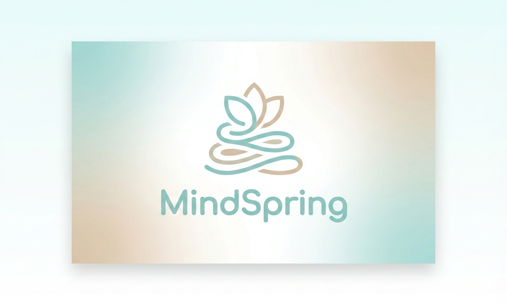
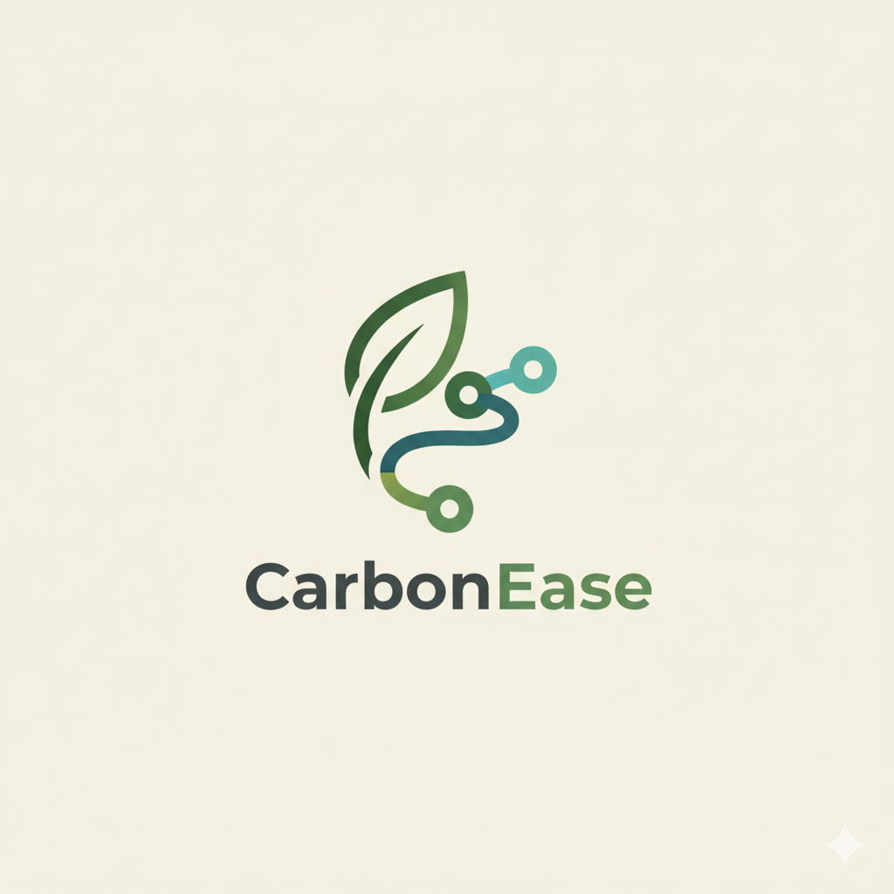
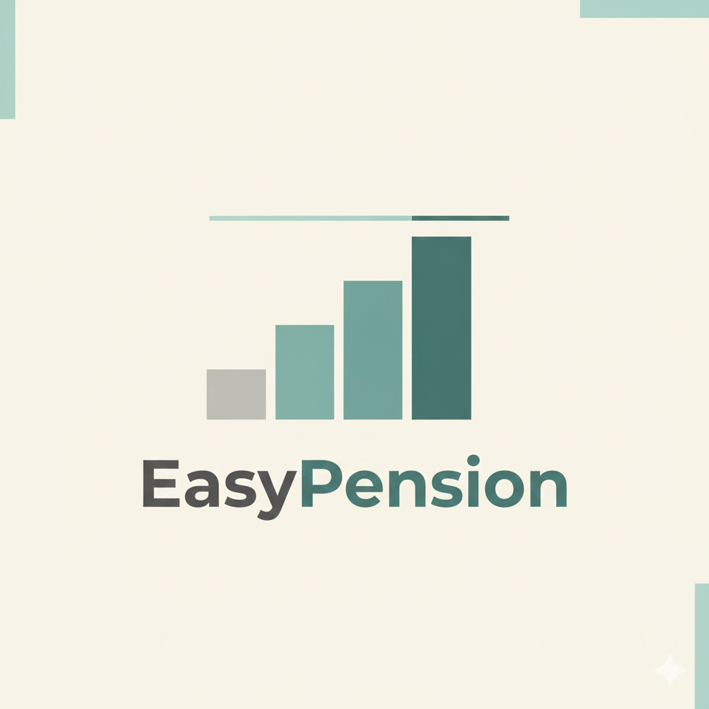
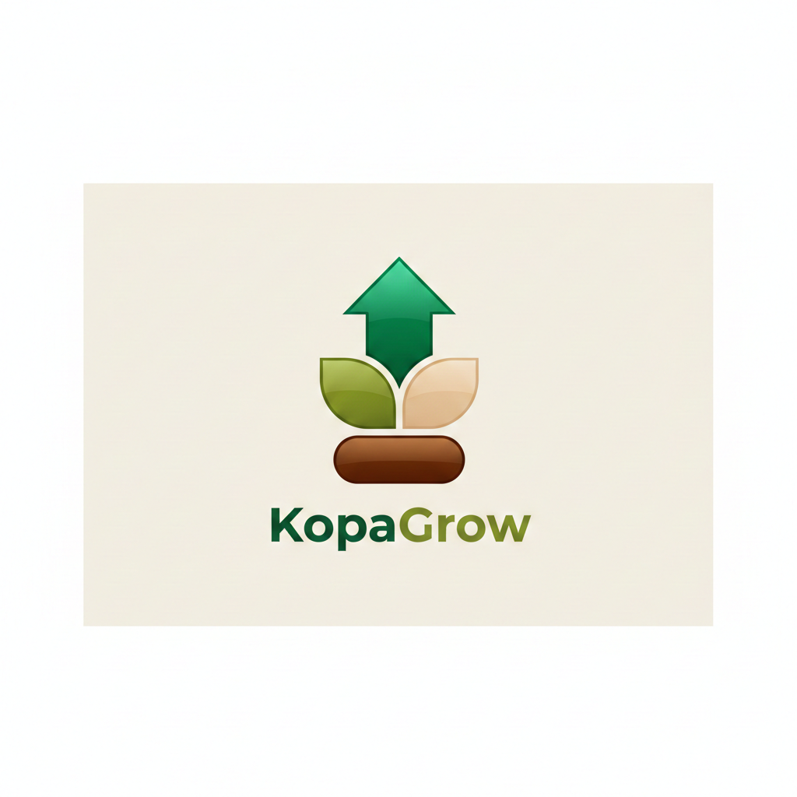

Projects

MindSpring
Emotionally-safe mental wellness companion with gentle check-ins, private reflection, and transparent AI, built for students and early-career life.
Visit Project →

CarbonEase
Unlocking carbon market access for smallholder farmers through transparent traceability and simplified participation, designed for trust, not complexity.
Visit Project →

EasyPension
A pension product designed for gig and informal workers, focused on accessibility, continuity, and long-term resilience, not paperwork.
Visit Project →

KopaGrow
A micro-lending platform built around smallholder farmers’ realities, using flexible credit design instead of one-size-fits-all loans.
Visit Project →
AI-Driven Credit Scoring
Case study on fair, explainable credit decisions using alternative data + ML, expanding responsible lending in emerging markets.
Visit Project →